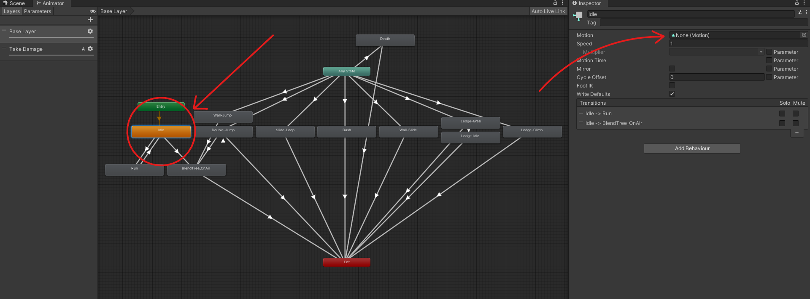

Quickly jump through sections:
- Character Object Setup
- Character Animations Setup
- Character Animations Setup - Single Jump Animation
- Character Animations Setup - Wall Slide Animation
- Character Animations Setup - Ledge Grab/Climb Animation
- Animation Clips Rebind
- Mechanics Setup
Character Object Setup
-
Importing the CharacterTemplate Prefab:
Begin by importing the CharacterTemplate prefab from the provided Getting Started folder. Drag and drop this prefab into your Unity scene to initiate setup. -
Assigning the Default Character Sprite:
Navigate to the SpriteRenderer component within the CharacterTemplate in your scene. This component can be found under CharacterTemplate -> Animatable -> SpriteHolder -> Sprites. Here, select and reference your desired character sprite to serve as the default appearance of your character. You can also scale the Sprites object if you wish to change the size of your character but NOT the SpriteHolder. -
Aligning Colliders:
Ensure that your selected sprite aligns properly with the character's colliders. You can find the colliders under CharacterTemplate -> Animatable -> Colliders -> Horizontal / Vertical. Specifically, focus on the Vertical collider as it should have no offset set in the X axis to ensure proper alignment. The Horizontal collider, on the other hand, generally does not require any special adjustment for alignment, but you may still review it for optimal positioning if needed.
Vertical Collider: Will be used when your character is in an upright position.
Horizontal Collider: Will be used when your character is floor-sliding.
The colliders of the character will be automatically toggled by the HumanoidController.TryFloorSlide method. -
Layers & Tags:
Assign your character to the desired Layer and/or Tag. By default, the assigned layer is set to Ignore Raycast since the asset cannot be destributed with custom layers included. -
Creating and Attaching a Custom Controller:
Create a new class that inherits from the HumanoidController class. Attach this new custom controller to the root object of your character (CharacterTemplate). This will allow you to extend and customize the character's behaviour as needed. Once the controller script is created and attached to the character, it will attempt to reference the colliders of the character to their respective fields. If the provided prefab is altered in any way, this operation might fail and the script will throw an error; otherwise a message will be logged in the console indicating that the operation was successful. -
Saving Your Character Prefab:
After configuring your character object, save it as an original prefab. This prefab will act as the base character object for your project.

Character Animations Setup
Once you've prepared your character object, navigate to the Getting Started folder again, and
locate the CharacterTemplate animator controller. It's recommended to create a duplicate of this animator controller instead of directly editing
it, for easier management and to avoid accidental changes.
To integrate your preferred animations with the animator controller template, simply assign your desired animation clip to each animation state
within the controller. If you wish to exclude a particular animation state, it's recommended to leave the state's reference empty rather than removing
it altogether. This helps prevent errors or unintended behaviour.
Some Notes:
- The system supports both double-jump and wall-jump animations. If your character jumps while in the air or performs a wall jump, the animator will transition to the respective state. If you lack distinct animations for double jumping and/or wall jumping but intend to support these mechanics, do not leave these fields empty; instead, reference your normal jump animation.
- At this stage, none of your animations will function. If you press play in the editor, your character will remain stationary, displaying the default sprite set in the Sprite Renderer component. This issue will be resolved in the next section of this page.
Important: Ensure that you reference the newly created animator controller to the animator component field of your character object. You can find this field within the character object under CharacterTemplate -> Animatable.

Character Animations Setup - Single Jump Animation
The locomotion system and animator are designed to support a series of animations for jumping via a blend tree, including jump-rise, jump-mid, and jump-fall
phases, resulting in the setup of the jump animation being a bit tricky. To configure it, double-click the 'BlendTree_OnAir' animation state to open the blend
tree settings. From there, you can assign the three animations that make up your jump sequence. The blend tree is pre-configured with default threshold values that should work
well with any combination of animations.
Important: If you only have a single animation for jumping, you can use the same animation for all three fields in the blend tree. Removing any of the three animation
references may cause unwanted behaviour.
Reference your animations from top to bottom: Jump-Fall -> Jump-Mid (Transition to fall) -> Jump-Rise
Character Animations Setup - Wall Slide Animation
The Wall Slide animation may need some adjustments to appear visually correct. Ensure that when your character is wall sliding,
it is properly positioned against the wall. If not, you'll need to adjust your animation clip slightly.
A common solution is to animate the "Sprites" child object of the CharacterTemplate along with the wall slide
animation clip. This can be found under CharacterTemplate -> Animatable -> SpriteHolder -> Sprites. Move it slightly backward
once the animation begins. For reference, you can inspect how the wall-slide animation clip of the provided player character is set up.
There is no need to fix any potential offsets right now since the character isn't yet configured to move or perform any actions. It is
recommended to complete this documentation page first. You can then address any offsets when you reach the Locomotion System page,
where all the mechanics will be implemented.
Character Animations Setup - Ledge Grab/Climb Animation
The ledge grab and climb animations may be offset by a significant margin due to the ledge detection method. To ensure accurate animations, the character's
visuals (not the character object's position) will be adjusted to match the detected ledge's height and horizontal position. This adjustment occurs whenever
a ledge is detected and the character engages in a grab or climb. The visual offset resets immediately after the action is completed. You can set this offset
using the LedgeGrab component attached to your character,
which includes a preset value to assist with initial adjustments.
As with the wall-slide mechanic, there is no need to rush and fix any offsets at this time. You can address any offsets when you reach the Locomotion System
page, where all the mechanics will be implemented.
Animation Clips Rebind
By default, Unity expects an Animator component to be attached to the same object as a Sprite Renderer component. This setup allows animation clips to play
correctly without additional configuration. However, in this case, the Animator component is not on the same object as the Sprite Renderer. Therefore, the animation clips'
paths need to be updated to reflect this change.
To ensure the Animator component correctly locates the Sprite Renderer in the hierarchy, follow these steps using the provided tool for changing animation
clip paths:
- Backup Animation Clips: Make sure to first backup your animation clips of your character.
- Select Character Object: Select your character in the hierarchy window.
- Rebind the Animation Clips: With the character selected, head over to Tools -> Rebind Animator Sprites in the top menu.
Important: Remember to re-run the tool whenever you add new animation clips to the Animator.
With this setup, you will be able to animate other parts of your character, such as the character collider, alongside the main character animations.

Mechanics Setup
With the character object now set up, you have the flexibility to customize it according to your preferences. The provided CharacterTemplate prefab comes
pre-equipped with all components included in the asset, such as the locomotion system and the combat system.
Optional Enhancements:
The prefab is pre-configured with all of the optional components. These include:
- CharacterSlide: Enables sliding mechanics.
- CharacterLedgeGrab: Facilitates ledge-grabbing abilities.
- CharacterDash: Introduces dash maneuvers.
- CharacterCombat: Integrates combat functionalities.
- EntityHealth: Manages the character's health system.
Simplified Configuration:
If you prefer a simpler setup, you can remove the previously mentioned optional components. However, note that the core functionalities remain intact with the following components:
- CharacterMovement: Provides basic movement controls.
- CustomControllerTemplate: Manages humanoid character behaviours. (Replace with your custom controller)
- CharacterEnvironmentalQuery: Facilitates environmental interactions.
Feel free to customize your character by adding or removing components based on your project requirements and desired gameplay mechanics.